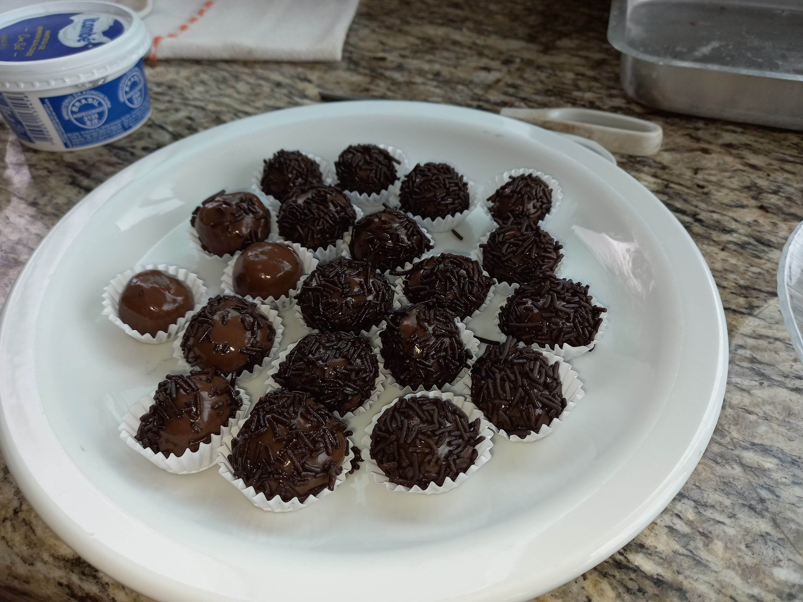

Brigadeiro

Description
Brigadeiro is a traditional brazilian chocolate sweet ball covered by chocolate sprinkles.
Ingredients
- 1 condensed milk;
- 1 milk cream;
- 4 spoons of cocoa powder;
- Chocolate sprinkles.
Steps
- Mix the condensed milk, milk cream and the chocolate cocoa in a pan;
- Cook it in medium heat until it reaches the desired consistency;
- Let it rest in the refrigerator for at least 4hrs;
- Make small balls of 20g out of it and coever them with the chocolate sprinkles.